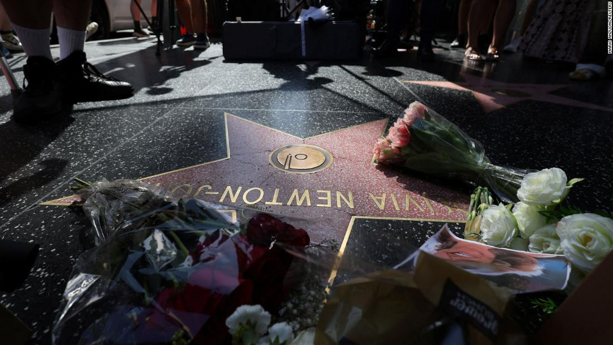

How the extraordinary FBI search of Mar-a-Lago was covered across the media landscape
The FBI search of Donald Trump's Florida resort is an extraordinary,
historic development given that it targeted a former President of the United States and
set off a political uproar he could use to stoke his likely 2024 White House bid.